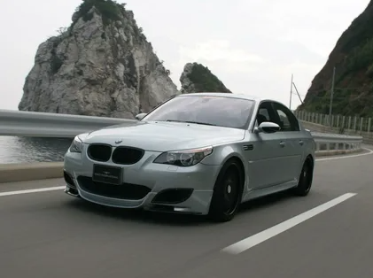
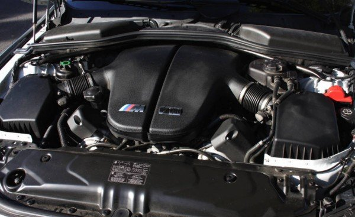

BMW M5 E60 – ПРОРЫВ В СЕРИЙНЫХ СПОРТКАРАХ
Спортивный автомобиль четвёртого поколения от известного подразделения Motorsport
впервые был представлен публике в 2005 году. В этом же году его запустили в серийное
производство. BMW M5 E60 – по-настоящему революционное авто, которое опередило
своего предшественника в развитии лет на десять.Первый показ М5 прошёл более чем успешно. Это
авто покорило поклонников суперсовременным экстерьером, шикарным салоном и
высокотехнологичными конструкторскими решениями. Внешним видом автомобиля занимался
американский дизайнер и конструктор автомобилей Крис Бэнгл. Двигатель проектировала группа
инженеров-мотористов из команды Формула-1 от концерна BMW. Подразделение М реализовало в М5
четвёртого поколения свои технические наработки более чем за 5 лет. В чём особенности этого
автомобиля, узнаем ниже.

Двигатель V10 – дань уважения Формуле-1
Силовой агрегат и коробка передач для нового спортивного автомобиля разрабатывали с нуля. Новый движок кардинально отличался от старого. Под капотом разместили V-образный двигатель с 10 цилиндрами. Этот силовой агрегат стал своеобразной данью уважения движкам V10 из Формулы-1.
Мотор имел маркировку S85B50. Он мог развивать мощность до 507 коней, а максимальный крутящий момент составлял 520 Нм. 40-клапанный атмосферный двигатель способен разогнать новую М-ку до 100 км/ч всего за 4,7 секунды.
<